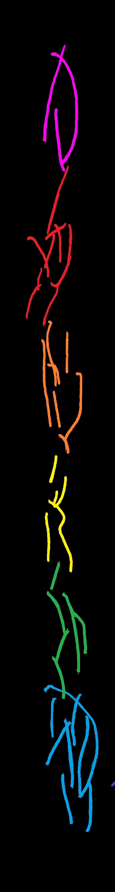
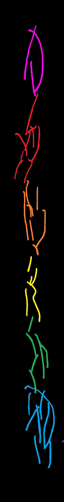
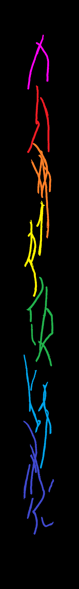
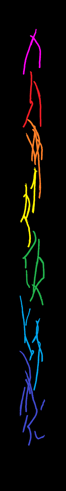

予め用意しておいたグリフ一覧がこちら。

これを手動で切り分け、


 


 

これをimagemagickで分解する。
for /l %%x in (1, 1, 22) do (
magick %%x.png -fill black +opaque #ff00f2 a\%%xマ.png
magick %%x.png -fill black +opaque #ed1c24 a\%%x赤.png
magick %%x.png -fill black +opaque #ff7f27 a\%%x橙.png
magick %%x.png -fill black +opaque #fff200 a\%%x黄.png
magick %%x.png -fill black +opaque #22b14c a\%%x緑.png
magick %%x.png -fill black +opaque #00a2e8 a\%%x水.png
magick %%x.png -fill black +opaque #3f48cc a\%%x青.png
magick %%x.png -fill black +opaque #a349a4 a\%%x紫.png
magick %%x.png -fill black +opaque #880015 a\%%x茶.png
magick %%x.png -fill black +opaque #ffaec9 a\%%x桃.png
)
これをtrimして、
for /r %%i in (*.png) do magick %%i -trim %%i
いらない画像を手動で削除し、20青を手動で直し、こうなる。
| | | | | | | | | | | | | | | | | | | | | |
| | | | | | | | | | | | | | | | | | | | | |
| | | | | | | | | | | | | | | | | | | | | |
| | | | | | | | | | | | | | | | | | | | | |
| | | | | | | | | | | | | | | | | | | | | |
| | | | | | | | | | | | | | | | | | | | | |
| | | | | | | | | | | | | | | | | |||||
| | | | | | | | | | | | | | | | | | ||||
| | | | | | | | | |||||||||||||
| | | | | | |
このうち、字どうしの重なりにより削られてしまっている 2緑・2黄・3水・3黄・5水・13黄・18茶・18緑・18橙・18赤・19水・21赤を手動で直す必要がある。
直したものがこちら。
 |  |  |  |  |  |  |  |  |  |  |  |  |  |  |  |  |  |  |  |  |  |
 |  |  |  |  |  |  |  |  |  |  |  |  |  |  |  |  |  |  |  |  |  |
 |  |  |  |  |  |  |  |  |  |  |  |  |  |  |  |  |  |  |  |  |  |
 |  |  |  |  |  |  |  |  |  |  |  |  |  |  |  |  |  |  |  |  |  |
 |  |  |  |  |  |  |  |  |  |  |  |  |  |  |  |  |  |  |  |  |  |
 |  |  |  |  |  |  |  |  |  |  |  |  |  |  |  |  |  |  |  |  |  |
 |  |  |  |  |  |  |  |  |  |  |  |  |  | ||||||||
 |  |  |  |  |  |  |  |  |  |  |  |  |  |  |  |  |  | ||||
 |  |  |  |  |  |  |  |  |  |  | |||||||||||
 |  |  |  |  |  |  |